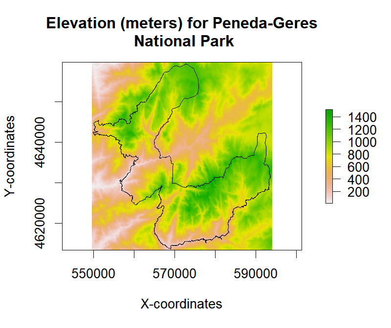
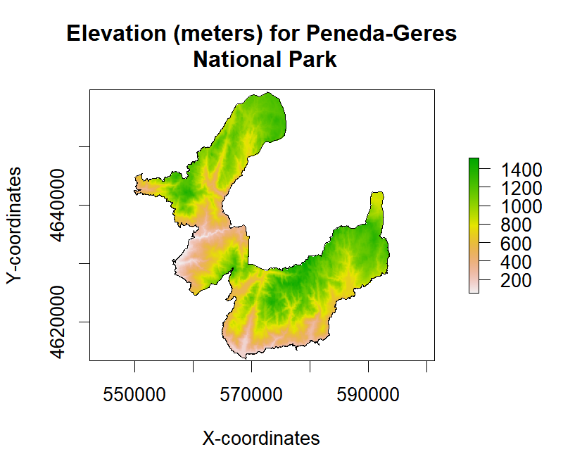

P4 Spatial data analysis: introduction to raster processing (part-3)
Joao Goncalves
17 November 2017
Background
In the third part of this tutorial series on spatial data analysis using the raster package, we will explore more functionalities, namely:
- Masking,
- Aggregation,
- Vector to raster conversion, and, zonal analysis.
In this post we will also introduce RasterBrick’s, a multi-layer raster object typically created from a multi-layer (or multi-band) file although they can also exist entirely in memory. These objects are similar to RasterStacks, but processing time should be shorter when using a RasterBrick (irrespective if values are on disk or in memory). However these objects are less flexible as they can only point to a single file, while RasterStacks can point to multiple different files.
For more information on raster data processing see here, as well as the
tutorial part-1, and, tutorial part-2.
Raster masking
Masking a raster is often required when we want to represent and/or analyze only the pixels included in a specific area/region. The remaining pixels are transformed into NA’s (or other user-defined value).
For this purpose we can use the mask function. The mask can be either a Raster* object (with the same extent and resolution), or a Spatial* object (e.g., SpatialPolygons) in which case, all cells that are not covered by this object are set to updatevalue (set as NA by default).
We will start by downloading, uncompressing and loading the sample data. A SpatialPolygons* layer will be used as the mask layer. The objective of this example is to mask elevation values that are inside the Peneda-Geres National Park (NW Portugal).
library(raster)
## Create a folder named data-raw inside the working directory to place downloaded data
if(!dir.exists("./data-raw")) dir.create("./data-raw")
## If you run into download problems try changing: method = "wget"
download.file("https://raw.githubusercontent.com/joaofgoncalves/R_exercises_raster_tutorial/master/data/srtm_pnpg.zip", "./data-raw/srtm_pnpg.zip", method = "auto")
## Uncompress the zip file
unzip("./data-raw/srtm_pnpg.zip", exdir = "./data-raw")
# In this example the function uses a string with the data location
rst <- raster("./data-raw/srtm_pnpg.tif")Now, let’s download and read the mask layer (using rgdal):
library(sp)
library(rgdal)
## If you run into download problems try changing: method = "wget"
download.file("https://raw.githubusercontent.com/joaofgoncalves/R_exercises_raster_tutorial/master/data/BOUNDS_PNPG.zip", "./data-raw/BOUNDS_PNPG.zip", method = "auto")
## Uncompress the zip file
unzip("./data-raw/BOUNDS_PNPG.zip", exdir = "./data-raw")
## Convert the data into SpatialPolygons (discards the attached attribute but keeps geometry)
maskLayer <- as(readOGR(dsn = "./data-raw", layer = "pnpg_bounds"), "SpatialPolygons")## OGR data source with driver: ESRI Shapefile
## Source: "./data-raw", layer: "pnpg_bounds"
## with 1 features
## It has 5 fieldsPlot the data to see if everything is OK:
plot(rst, main="Elevation (meters) for Peneda-Geres\n National Park", xlab="X-coordinates",
ylab = "Y-coordinates")
plot(maskLayer, add=TRUE)

Finally, let’s mask the values for the Park boundaries:
rstMasked <- mask(rst, maskLayer)
plot(rstMasked, main="Elevation (meters) for Peneda-Geres\n National Park", xlab="X-coordinates",
ylab = "Y-coordinates")
plot(maskLayer, add=TRUE)

From the image, we can see that only pixels occurring inside the Park are represented.